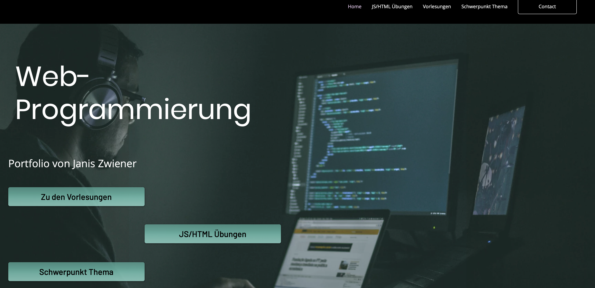

Reflexion
Vergleich HTML und Wixx.com
Letztes Semester sah meine Webpage noch wie folgt aus:

Man kann nicht leugnen, dass sie deutlich progressiver aussah. Hovering-Elemente und eine vollständig zufällige Anordnung großer Bilder sind in HTML bzw. CSS deutlich schwieriger umzusetzen.
Allerdings ist mir schon damals aufgefallen, dass diese Website einen rein informierenden Purpose hat und somit auf das Bling Bling verzichtet werden kann. Letzendlich war das Schreiben und Eintragen von Text deutlich einfacher (weswegen ich dieses Semester auch längere Texte habe). Außerdem war der Spaß und Lernfaktor deutlich höher.
Reflexion der Vorlesungen
Dieses Semester kam ich bei den Übungen und Themen der Vorlesungen deutlich besser mit. Das lag vielleicht daran, dass wir mittlerweile schon größeres Grundlagenwissen haben. z.B. aus Grundlagen der IT (Netzwerktechnik, Funktionsweise des Internets, etc.) und Java-Programmierung (Threads). Es war aber viel interessantes, neues dabei (z.B. Seekabel) Die Übungen boten einen größeren WOW-Effekt (ChatServer) und machten auf lustige Probleme außerhalb von Code-Syntax aufmerksam (TomCat).
Kritisch zu betrachten ist, dass Themen wie Java-Servlets vielleicht nicht mehr die Spitze des Entwicklungsstandes wiedergeben und deshalb gerne durch Themen aus dem Cloud-Computing und Software-Lifecycle-Management verdrängt werden dürften. Dies wäre auch vor dem Hintergrund, dass IMBIT-Studenten im späteren Job, in Entwicklungsteams, die Rolle eines Vermittlers zwischen Programmierer und Management haben und somit diese Schnittstellen besonders fokussiert werden sollte (wenn genügend Grundlagen-Wissen über die Ground-Layer Informatik besteht).